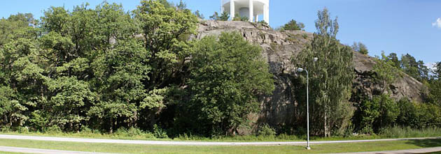

Lat: 59.33067 Long: 18.39114
Liten klippa bredvid väg som bjuder på finare klättring än vad man kan tro. Torkar långsamt. Klippan fick en totalrenovering våren -08. Alla leder gicks igenom. Alla pitonger togs bort och ersattes av borrbult eller egna säkringar. Alla leder har numera firningsankare. Dessutom sitter ett ankare ovanför de fyra lederna längst till höger för den som vill kunna sätta upp topprep på dessa leder. Vegetationen under klippan röjdes av Värmdö kommun och lederna fick sig en avborstning då vissa börjat mossa igen.
<div style="width: 355; float: right; margin-left: 10px; padding: 3px; border: solid 1px #cccccc;"> <googlemap width=350 height=300 lat="59.33067" lon="18.39114" zoom="14" type="map" controls="small"> 59.33067,18.39114,
Gustavsbergs Vattentorn
</googlemap> </div>
<div style="float: right; margin-left: 10px;"> <slresa> titel=Gustavsbergs Vattentorn lat=18391140 long=59330670 </slresa> </div>
Kör väg 222 ut mot Värmdö. Tag av avfart Ingarö/Gustavsberg. Kör höger mot Gustavsberg vid T-korsning. Följ vägen rakt fram några km tills du har en OK-mack på vänster sida. Ta vänster och efter 30 meter har du klippan på höger sida. Det finns en bra parkeringsficka precis före klippan.
Klippan ligger inte långt ifrån
Skevik
.
Kategori:Nacka-Värmdö
Kategori:Stockholm
Category:Retrobultning
Category:Sport
Category:Mix
Category:Trad
Category:Vertikalt